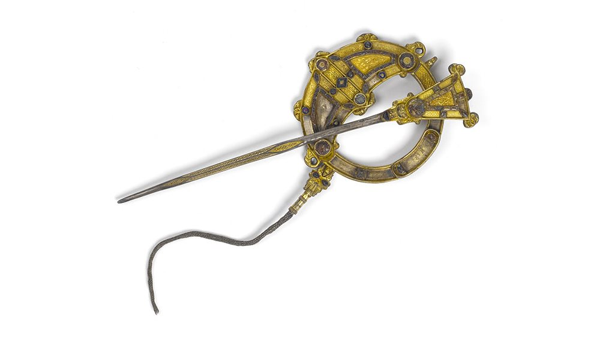
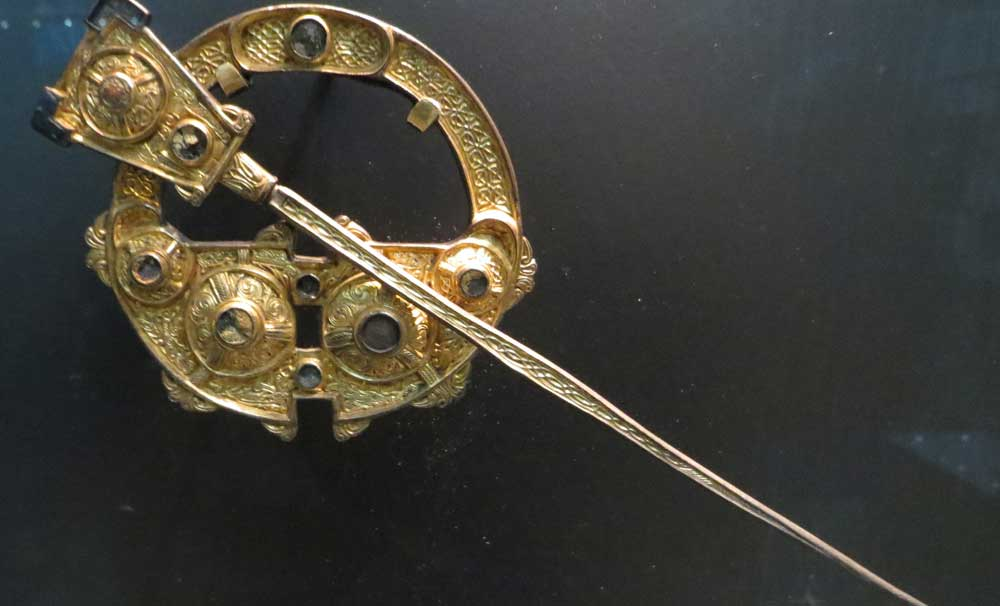
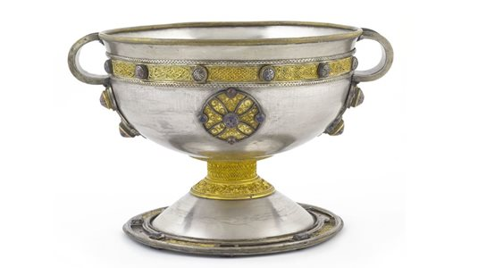
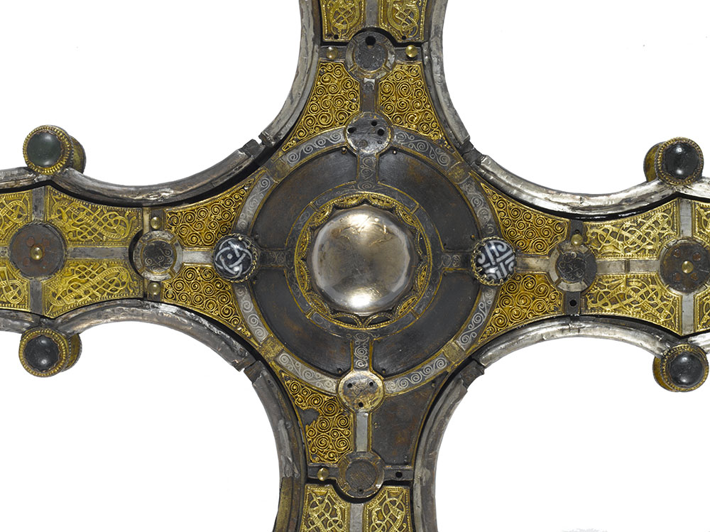
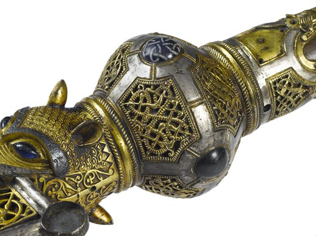
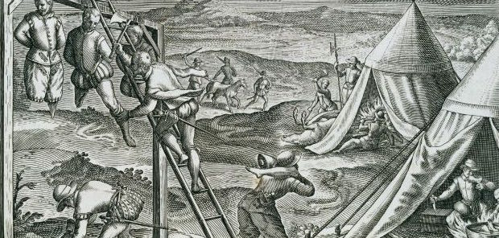
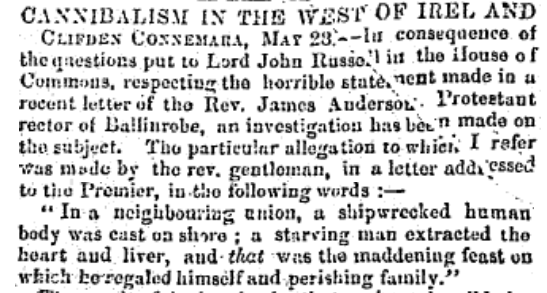
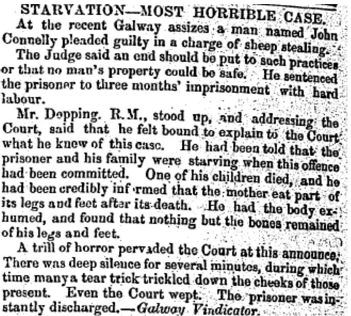
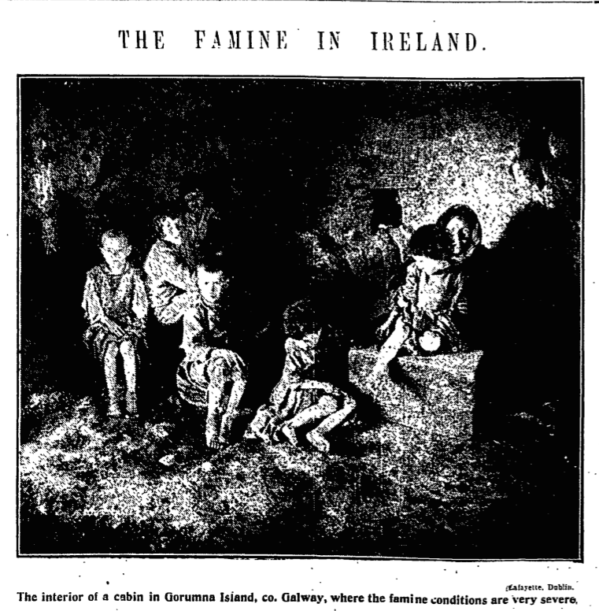
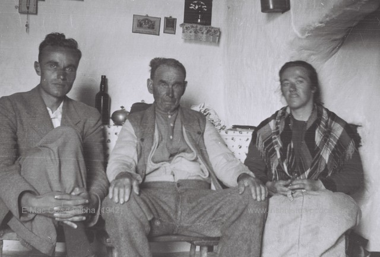

Blog
The Tara Brooch
From the 8th century A.D
This brooch was found not in Tara but near the seashore at Bettystown, Co. Meath, in 1850. Its provenance was attributed to Tara by a dealer in order to increase its value. It is made of cast and gilt silver and is elaborately decorated on both faces. The front is ornamented with a series of exceptionally fine gold filigree panels depicting animal and abstract motifs that are separated by studs of glass, enamel and amber. The back is flatter than the front, and the decoration is cast. The motifs consist of scrolls and triple spirals and recall La Tène decoration of the Iron Age.
Bog Butter

"Bog butter" refers to an ancient waxy substance found buried in peat bogs, particularly in Ireland and Great Britain. Likely an old method of making and preserving butter, some tested lumps of bog butter were made of dairy products while others were meat-based.
In rural Ireland, it’s not unusual for residents to come across a block of bog butter while digging up peat to heat their homes. Incredibly, this butter has often laid buried—in wooden containers, earthenware pots, or animal skins—for hundreds or even thousands of years. This sample was found to be 2000 years old. Even after all this time, it can still have a notably buttery texture and aroma, although the taste tends to be a little too aged for modern palates.
The Ardagh Chalice
The Ardagh Chalice is one of the greatest treasures of the early Irish Church. It is part of a hoard of objects found in the 19th century by a young man digging for potatoes near Ardagh, Co. Limerick. It was used for dispensing Eucharistic wine during the celebration of Mass. The form of the chalice recalls late Roman tableware, but the method of construction is Irish.
The bowl and foot of the chalice are made of spun silver. The outer side of the bowl is decorated with applied gold, silver, glass, amber and enamel ornament. The underside of the foot is also highly decorated and contains a polished rock crystal at the centre.
The Ardagh Chalice represents a high point in early medieval craftsmanship and can be compared in this regard to the Tara Brooch and the Derrynaflan Paten.
The Cross of Cong
The Cross of Cong is an early 12th-century Irish Christian ornamented cusped processional cross, which was, as an inscription says, made for Tairrdelbach Ua Conchobair, King of Connacht and High King of Ireland to donate to the Cathedral church of the period that was located at Tuam, County Galway.
It was made to enshrine a relic of the True Cross, known from written sources to have been acquired in AD 1122 by Toirrdelbach Ua Conchobair (Turlough O’Conor), High King of Ireland. The cross was designed for processional use, although it may have been mostly used as an altar cross. It has an oak core which is covered by plates of cast bronze. A large polished rock crystal on the front of the cross at the junction of the arms and shaft was intended to protect the relic, which does not survive. The rock crystal is set in a conical mount surrounded by a flange decorated with gold filigree, niello and blue and white glass bosses. The bronze plates on the surfaces of the cross are cast openwork and are decorated with ribbon-shaped intertwined animals in the Scandinavian-derived Urnes style.
Cannibalism in Irish History
The early 14th century was perhaps the most difficult period in recorded human history. Between 1315-18 northern Europe (including Ireland) lost about 10 -15 % of its population from famine and related diseases. In Ireland the severe food shortages were exacerbated by a concurrent invasion from Scotland. This lead some to resort to cannibalism. The annals of Ulster claimed ‘people undoubtedly used to eat each other throughout Ireland’. This was supported by the Annals of Connacht which attests ‘undoubtedly men ate each other’. Graces Annals a later compilation of sources more dramatically claimed
‘some are said to have taken the bodies of the dead from the graves, to have cooked the bodies in skulls, and to have eaten them; women also devoured their infants’.
Some have argued that these rather general descriptions are merely literally devices to highlight the severity of the famine. However more specific incidences exist as well. In 1295, another period of severe starvation The Blackbook of Christchurch Cathedral, Dublin recorded that the poor were eating the bodies of executed criminals.
An even more specific allegation was made against the garrison of Carrigfergus castle which endured a Scots siege for nearly a year between 1315 – 1316. In the Autumn of 1316 the garrison reputedly ate over two dozen prisoners they had taken hostage.
Irrefutable evidence of cannibalism in Ireland comes from modern history and in particular the Great Famine of the 1840s. The subject of cannibalism in the recent past is obviously a more sensitive topic and relatively little is known about it. Recently papers like this from the economic historian Cormac O’Grada has started to shed light on a what can be a disturbing topic. In at least once case the evidence pretty clear. This report appeared in The Nenagh Guardian on April 8th, 1848
1925 – Ireland’s Forgotten Famine?
In the early 1920s Ireland was in a ruinous state. The war of independence, the civil war and an economic depression were taking their toll on society. An internal government memo of November 1924 painted a grim picture “In Industrial and Commercial occupations some 47,000 are unemployed, In Agriculture probably 40,000. Business is languishing; bank deposits are diminishing. The national trade balance is adverse.”
The governing party, Cumann na nGaedheal, were committed to bringing the country back onto an even keel. However this led to one of the darkest chapters in Ireland’s economic history when they attempted to cover up severe levels of starvation among substantial numbers of the population.
The government plan was simple and will resonate with many today – extreme austerity. A highly conservative party, they were committed to trickle down economics seeing large farmers as the engine of the economy. Therefore they tried to cut the richer farmers’ tax and costs while also reducing government expenditure – regardless of the social cost.
In 1923 they supported these farming interests in a vicious labour dispute that saw wages slashed by 16% and the seven-day working week reintroduced. In 1924 Finance minister, Ernest Blythe, cut the old age pension by 10%, something that would haunt the government in years to come. However worse was to come.
The harvest in 1923 and, in particular, 1924 was nothing short of disastrous. The weather, while not particularly cold, was unusually wet. Crop yields collapsed. The potato – still the main food source for many rural poor – rotted in the fields. Fodder was impossible to find and animal stocks died in large numbers from hunger related diseases. To compound this crisis, it was not possible to dry out turf – the main fuel source for the rural poor.
As 1924 drew to a close, hundreds of thousands in what were known as congested districts (the most impoverished areas) were in dire need. The Freeman’s Journal illustrated the depths of the crisis when reporting from Connemara, one of the worst hit regions, “75% of the people had now no potatoes, their chief diet for the last 2 months, and the harvest prospects were never worse in living memory. There is no employment.”
